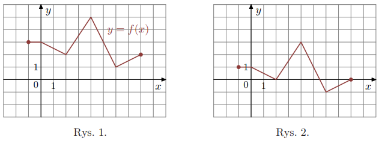

Funkcja liniowa \(f(x) = 5x\). Wykres przesunięto o 1 jednostkę w prawo. Funkcja \(g\) jest określona wzorem:
Rozwiązanie krok po kroku:
– Przesunięcie o 1 w prawo oznacza \(g(x) = f(x-1) = 5(x-1) = 5x - 5\).
– Poprawna odpowiedź: A.
Funkcja \(g\) powstaje przez przesunięcie wykresu \(f\) o 4 jednostki w lewo.
Dokończ zdanie:
Funkcje \(f\) i \(g\) są powiązane zależnością...
oraz mają takie same:
Rozwiązanie krok po kroku:
– Przesunięcie o 4 w lewo: \(g(x) = f(x+4)\).
– Przesunięcie w poziomie nie zmienia zbioru wartości, ale zmienia dziedzinę.
– Poprawna para: A i 2.
Dana jest funkcja kwadratowa \(f\). Zdefiniowano \(g(x) = f(x-2)\).
Wykres funkcji \(g\) przedstawiono na jednym z rysunków.
Rozwiązanie krok po kroku:
– Wzór \(g(x)=f(x-2)\) oznacza przesunięcie wykresu w prawo o 2.
– Poprawna odpowiedź: D.
Funkcja \(g(x) = f(x-1)\). Dziedziną funkcji \(f\) było \((-2,5)\). Jaką dziedzinę ma \(g\)?
Rozwiązanie krok po kroku:
– Jeśli \(g(x)=f(x-1)\), to dla każdego \(x\) w dziedzinie \(g\) mamy \(x-1 \in (-2,5)\).
– To znaczy \(x \in (-1,6)\).
– Poprawna odpowiedź: B.
Na rysunku 1 przedstawiono wykres funkcji \(f\) określonej na zbiorze \([-4,5]\).
Funkcję \(g\) określono za pomocą funkcji \(f\). Wykres funkcji \(g\) przedstawiono na rysunku 2.
Wynika stąd, że:
Rozwiązanie krok po kroku:
– Porównanie rys.1 i rys.2 pokazuje przesunięcie w lewo o 2 jednostki.
– Zatem \(g(x)=f(x+2)\).
– Poprawna odpowiedź: D.
Na poniższym rysunku przedstawiono wykres funkcji \(f\) określonej w zbiorze \((-6,5]\).
Funkcja \(g(x)=f(x)-2\) dla \(x\in[-6,5]\). Wskaż zdanie prawdziwe.
Rozwiązanie krok po kroku:
– Dla \(g(x)=f(x)-2\), mamy \(f(2)+g(2)=f(2)+f(2)-2=2f(2)-2\).
– Z rysunku \(f(2)=0\). Zatem wynik: \(-2\).
– Poprawna odpowiedź: A.
Wierzchołek paraboli będącej wykresem \(y=f(x)\) ma współrzędne (2,2).
Wówczas wierzchołek paraboli \(g(x)=f(x+2)\) ma współrzędne:
Rozwiązanie krok po kroku:
– Zastąpienie \(x\) przez \(x+2\) przesuwa wykres o 2 w lewo.
– Wierzchołek z (2,2) przesuwa się na (0,2).
– Poprawna odpowiedź: B.
Funkcja \(g\) jest określona wzorem:
Rozwiązanie krok po kroku:
– Analizując wzór na rysunku: funkcja została przesunięta w dół o 1.
– Zatem \(g(x)=f(x)-1\).
– Poprawna odpowiedź: B.
Na rysunku 1 przedstawiono wykres funkcji \(y=f(x)\) określonej dla \(x\in[-7,4]\).
Rysunek 2 przedstawia wykres funkcji:
Rozwiązanie krok po kroku:
– Rysunek 2 pokazuje przesunięcie w prawo o 2 jednostki.
– Zatem \(y=f(x-2)\).
– Poprawna odpowiedź: C.
Wykres funkcji \(f\):
Wykres funkcji \(g(x)=f(x)+2\) przedstawiono na rysunku:
Rozwiązanie krok po kroku:
– Dodanie +2 powoduje przesunięcie w górę.
– Z rysunków wynika, że pasuje wariant B.
– Poprawna odpowiedź: B.
Na rysunku 1 jest przedstawiony wykres \(y=f(x)\).
Funkcja na rysunku 2 jest określona wzorem:
Rozwiązanie krok po kroku:
– Wykres został przesunięty w dół o 2 jednostki.
– Zatem \(y=f(x)-2\).
– Poprawna odpowiedź: B.
Rysunek przedstawia wykres \(y=f(x)\).
Wskaż rysunek, na którym jest wykres \(y=f(x+1)\).
Rozwiązanie krok po kroku:
– Zastąpienie \(x\) przez \(x+1\) przesuwa wykres o 1 w lewo.
– Spośród wariantów, rysunek D przedstawia to przesunięcie.
– Poprawna odpowiedź: D.